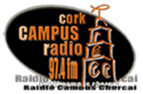

| Contents
Introduction |
Cork Campus Radio RTP Admin Introduction This 'Cork Campus Radio RTP Admin' is a Java based Real Transport Protocol receiver, exporter and database administration application developed to be used by the members/employees of the college radio station 'Cork Campus Radio' (CCR). It is basically an administration version of the 'Cork Campus Radio RTP Client' application developed for listeners of CCR as opposed to members of staff of the radio station. The Real Transport Protocol is: "The Internet-standard protocol for the transport of real-time data, including audio and video. RTP is used in virtually all voice-over-IP architectures, for videoconferencing, media-on-demand, and other applications. A thin protocol, it supports content identification, timing reconstruction, and detection of lost packets." (Taken From: http://www.constellationnetcorp.com/definitions.htm)
The 'Cork Campus Radio RTP Client' (CCR RTP Admin), allows the user to listen to an RTP stream that is broadcast across over a network, (the internet, college intranet). Besides enabling the user to listen to the college radio station, my application will also allow the user to view an up to date schedule of the station’s programmes for the current day, or view the schedules for any other day of the week, while listening to the station’s programmes.
The application, the ‘Cork Campus Radio RTP Admin’ (CCR RTP Admin), allows the radio station to update the stations programme schedule through an intuitive Graphical User Interface (GUI) and view the schedule for any day of the week. The radio station administrator can also record a live stream from their live RTP transmission, allowing them to easily save programmes in ‘MP3’ or ‘WAV’ audio file formats. NOTE: Features:The 'Cork Campus Radio RTP Admin' allows you to: • To connect and listen to the 'Cork Campus Radio' RTP stream and
listen to live programming from the station with the click of a button. |